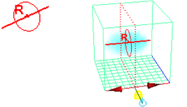
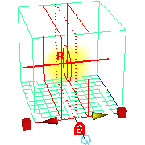

可以使用“绘制流体工具”(Paint Fluids Tool)将值放置在流体栅格中的精确位置，还可以通过每个笔刷笔划对现有值进行缩放、平滑、替换或添加，来编辑现有值。“绘制流体工具”(Paint Fluids Tool)是 Artisan 笔刷工具，因此该工具与其他 Artisan 工具的工作方式类似。有关详细信息，请参见手册的“Artisan”部分中的 Artisan 笔刷工具的工作方式。
若要绘制流体特性值，特性的“内容方法”(Contents Method)必须定义为“静态栅格”(Static Grid)或“动态栅格”(Dynamic Grid)。
在 2D 容器中绘制
在 2D 容器中绘制特性值类似于在画布上进行绘制。将笔刷移动到表示容器的平面上，并通过拖动笔刷将特性值放置到栅格中。
在 2D 流体容器中绘制流体特性
- 选择流体容器。
- 选择“绘制流体工具”(Paint Fluids Tool)并打开“工具设置”(Tool Settings)窗口（
 ）。
）。 - 如果正在“动态栅格”(Dynamic Grid)中进行绘制，请确保“工具设置”(Tool Settings)窗口内“绘制属性”(Paint Attributes)区域中的“自动设置初始状态”(Auto Set Initial State)处于启用状态。
该选项会将绘制的值保存到初始状态缓存文件中，这样在播放后回放到模拟的第一帧时，会恢复原始绘制值。当退出“绘制流体工具”(Paint Fluids Tool)、更改当前时间或更改选择时，系统将保存值。有关初始状态的信息，请参见设定流体的初始状态。
注：通过选择，可随时手动设置初始状态。通过选择，可以清除它。能够轻松自如地绘制流体的有经验用户可能更喜欢在禁用“自动设置初始状态”(Auto Set Initial State)的情况下工作并手动进行保存。
- 在“可绘制属性”(Paintable Attributes)一侧，选择要绘制的流体特性。有关详细信息，请参见可绘制属性。
如果选定流体特性未设定为“动态栅格”(Dynamic Grid)或“静态栅格”(Static Grid)，系统将提示您进行设定。
- 修改任意“绘制属性”(Paint Attributes)设置。
请参见绘制属性。
- 选择笔刷的“剖面”(Profile)、“绘制操作”(Paint Operation)和“值”(Value)。详细信息请参见绘制流体工具选项。
- 在流体容器上拖动以进行绘制。
在 3D 容器中绘制
若要在 3D 容器中绘制，实际上是要在容器“切片”的两个维度上进行绘制。切片是在 X、Y 或 Z 方向上表示绘制位置的平面。（可以将切片视为画布。）虽然是分别在每个切片上进行绘制，但相邻切片的累加效果就是一个 3D 流体。
首次选择“绘制流体工具”(Paint Fluids Tool)时，系统将在流体容器的原点处显示一个绘制切片。切片以由虚线边构成的平面表示，且流体子体积操纵器位于切片的一角。将指针移动到切片上时，指针将变为笔刷，指示您可在切片上进行绘制。
可以使用显示在切片一角的流体操纵器来控制所绘制切片的位置和厚度。有关详细信息，请参见显示 3D 容器的子体积。
在 3D 流体容器中绘制流体特性
- 选择流体容器。
- 选择“绘制流体工具”(Paint Fluids Tool)并打开“工具设置”(Tool Settings)窗口（ ）。
- 如果正在“动态栅格”(Dynamic Grid)中进行绘制，请确保“工具设置”(Tool Settings)窗口内“绘制属性”(Paint Attributes)区域中的“自动设置初始状态”(Auto Set Initial State)处于启用状态。
该选项会将绘制的值保存到初始状态缓存文件中，这样在播放后回放到模拟的第一帧时，会恢复原始绘制值。当退出“绘制流体工具”(Paint Fluids Tool)、更改当前时间或更改选择时，系统将保存值。有关初始状态的信息，请参见流体初始状态。
注：通过选择，可随时手动设置初始状态。通过选择，可以清除它。能够轻松自如地绘制流体的有经验用户可能更喜欢在禁用“自动设置初始状态”(Auto Set Initial State)的情况下工作并手动进行保存。
- 在“可绘制属性”(Paintable Attributes)一侧，选择要绘制的流体特性。有关详细信息，请参见可绘制属性。
如果选定流体特性未设定为“动态栅格”(Dynamic Grid)或“静态栅格”(Static Grid)，系统将提示您进行设定。
- 修改任意“绘制属性”(Paint Attributes)设置。
请参见绘制属性。
- 选择笔刷的“剖面”(Profile)、“绘制操作”(Paint Operation)和“值”(Value)。详细信息请参见绘制流体工具选项。
- 将绘制切片移动到要绘制的切片。
请参见移动绘制切片或子体积。
帮助行会显示绘制切片的位置。例如：
流体切片位置: 4.000
每个轴上的切片数与流体容器的分辨率相对应。从 0 开始编号。因此，如果容器的分辨率为 10 10 10，那么切片就从 0 到 9 进行编号。
- 如果希望笔划仅影响容器的一部分，请显示出要影响的子体积。请参见更改子体积的厚度。
- 若要穿过多个切片进行绘制，请在“绘制流体工具”(Paint Fluids Tool)设置编辑器的“笔划”(Stroke)区域中增加“图章深度(3D)”(Stamp Depth (3D))的值，使该值大到足以穿过多个切片进行绘制。笔刷提供的反馈中指示了笔划在绘制切片任一侧的绘制深度。 
如果使笔刷深度厚于所显示子体积的深度，则仅绘制子体积。
 - 拖动笔刷穿过绘制切片。
- 移动绘制切片，并进行绘制。重复操作，直到在容器中绘制了全部的所需值。 提示： 翻滚以更改绘制切片时的视图轴。绘制特性相对于不同的轴是用于确保从不同角度查看流体时切片之间没有间距的好方法。
锁定视图轴以防止绘制时绘制切片切换到其他轴。
有关详细信息，请参见显示 3D 容器的子体积。
将值整体应用到容器
整体应用到容器类似于使用巨大的笔刷将笔刷设置应用到容器或选定子体积中的全部体素。整体应用流体容器时，选定流体特性的体素值会根据为工具设定的值和操作而更改。
整体应用到容器
- 按照在 2D 流体容器中绘制流体特性下的前 5 步进行操作。
- 显示要整体应用的切片，然后单击“整体应用”按钮（热键：+F）：
- 若要整体应用到整个容器，请将目标操纵器设定到默认位置。
- 若要整体应用到子体积，请显示出子体积。
有关详细信息，请参见显示 3D 容器的子体积。
提示：若要平滑值之间的过渡，请选择“平滑”绘制操作，然后整体应用到容器或子体积。
在播放期间绘制
可在播放时绘制流体，感受一下动力学。例如，可以绘制“密度”(Density)，并在绘制“速度”(Velocity)时可以观看该密度的模拟效果。
开始在播放期间绘制时，系统不会提示您保存初始状态。播放期间的任何绘制都将丢失。（如果启用“自动设置初始状态”(Auto set initial state)，那么最后绘制笔划的结果将保存为初始状态。）
将值映射到容器体素
图像值可映射到容器体素中。“绘制流体工具”(Paint Fluids Tool)设置通过使用映射的值应用到体素。
将图像导入到 3D 流体时，系统会将值映射到子体积操纵器指示的子体积切片。
从 3D 流体导出图像时，导出的值为绘制切片上的值。
值导入/导出为：
- “密度”(Density)、“温度”(Temperature)和“燃料”(Fuel)
值映射到每个 RGB 通道。例如，值为 0.2 的“密度”(Density)值导出到 RGB .2, .2, .2)
-
颜色(Color)
RGB 值直接映射到 RGB 通道。
- “密度”(Density)和“颜色”(Color)
“颜色”直接映射到 RGB 通道；“密度”(Density)映射到“Alpha”通道。
- “密度”(Density)和“燃料”(Fuel)
“密度”(Density)映射到 R；“燃料”(Fuel)映射到 G。
-
速度(Velocity)
速度的 X、Y、Z 方向分别映射到 RGB；速度的幅值映射到“Alpha”通道。若要容纳负速度，则要按以下内容映射“速度”(Velocity)值：
export color R = (velocity X + 1.0)/2
import Velocity X = (2.0 * color R - 1.0)
有关映射的详细信息，请参见手册的“Artisan”部分中的贴图属性。
导出/导出的“Alpha”值将重新映射到“绘制流体工具”(Paint Fluid Tool)设置中的“最小值”(Min Value)到“最大值”(Max Value)的范围，或从该“最小值”到“最大值”的范围中重新映射出来。
显示绘制的值
可选择绘制时特性值在着色显示模式中的显示方式。默认情况下，仅显示正在绘制的特性值，但可以将其更改为显示容器中所有将会渲染的特性。有关详细信息，请参见显示。
重置“绘制流体工具”(Paint Fluids Tool)
单击位于“工具设置”(Tool Settings)窗口中的“重置工具”(Reset Tool)按钮，将“绘制流体工具”(Paint Fluids Tool)重新设定为默认设置。
撤消绘制笔划
可以撤消在“首选项”(Preferences)窗口（“窗口 > 设置/首选项 > 首选项”(Windows > Settings/Preferences > Preferences)）的“撤消”(Undo)类别中定义的任意数量的绘制笔划。